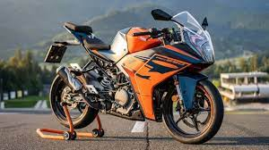

KTM RC 390
La KTM RC 390 es una opción excelente para aquellos que buscan una moto deportiva más ligera y manejable. Con un motor de un solo cilindro de 373 cc, la RC 390 ofrece una experiencia de conducción ágil y divertida, ideal para pilotos novatos y experimentados por igual.

1. Historia y Evolución
La KTM RC 390 es una motocicleta deportiva ligera introducida por KTM en 2014. Diseñada para ofrecer un rendimiento emocionante tanto para principiantes como para pilotos experimentados, la RC 390 ha ganado popularidad rápidamente gracias a su manejo ágil, motor potente y estilo agresivo.
- 2014: Lanzamiento inicial de la RC 390, con un motor monocilíndrico de 373 cc y un diseño inspirado en las motos de carreras.
- 2017: Primera actualización significativa, con mejoras en la ergonomía, un nuevo diseño de escape para cumplir con las normas de emisiones Euro 4 y actualizaciones electrónicas.
- 2020: Introducción de una versión revisada con mejoras en la suspensión, frenos y diseño aerodinámico.
- 2022: Última generación con un enfoque renovado en la tecnología de asistencia al piloto y un diseño actualizado.
2. Especificaciones Técnicas
La KTM RC 390 combina un motor potente con un chasis ligero para ofrecer un rendimiento ágil y emocionante. Aquí están las especificaciones técnicas más recientes:
- Motor: Monocilíndrico de 373 cc, DOHC, 4 válvulas, refrigerado por líquido.
- Potencia: Aproximadamente 44 CV a 9,000 RPM.
- Par Máximo: 37 Nm a 7,000 RPM.
- Transmisión: Caja de cambios de 6 velocidades.
- Chasis: Tubular de acero con estructura de rejilla.
- Suspensión Delantera: Horquilla invertida WP APEX de 43 mm.
- Suspensión Trasera: Amortiguador WP APEX, ajustable en precarga.
- Frenos: Disco delantero de 320 mm con pinza radial ByBre de 4 pistones y disco trasero de 230 mm.
- Peso: Aproximadamente 172 kg en orden de marcha.
- Altura del Asiento: 820 mm.
- Capacidad del Tanque: 13.7 litros.